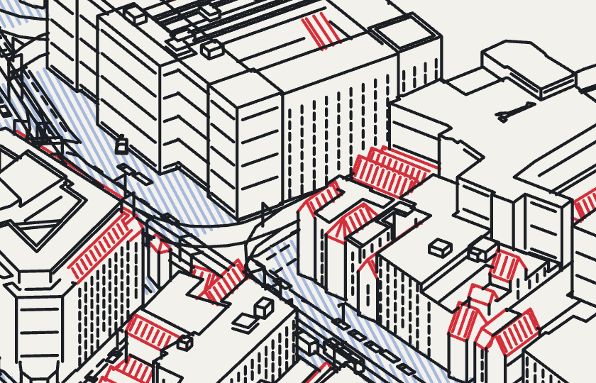
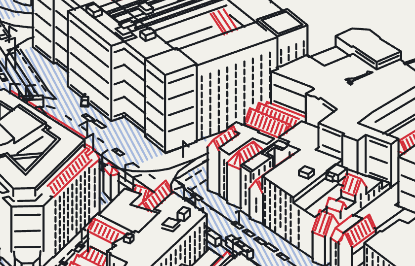

15 November 2026 · Original review · Round 13
Overhead contact wires now need clear projected separation from their own rail corridor. Height alone cannot guarantee that separation: on tracks pointing into the view, the wire can lie over the rails and add ink without reading as a distinct object.
The new contact-wire gate measures perpendicular clearance, allows for ink, and follows the rails layer’s Detail. A crowded wire is omitted for the whole mapped way, avoiding loose fragments. Masts and support arms remain, preserving the electrical infrastructure’s character. This applies to both inferred electric main lines and trams.


Amsterdam, Trubschachen and Mollis at 1:1000 and 1:2000, Detail 1, 0.35 mm pen, optional OSM tags off. Both Trubschachen and Mollis comparisons are unchanged; the clearest reduction is Amsterdam at 1:2000.
| Sheet | Waste before → after | Estimated time change |
|---|---|---|
| Amsterdam 1:1000 | 6.5% → 6.5% | -0.02% |
| Amsterdam 1:2000 | 10.0% → 9.8% | -0.22% |
| Trubschachen 1:1000 | 5.2% → 5.2% | +0.00% |
| Trubschachen 1:2000 | 8.5% → 8.5% | +0.00% |
| Mollis 1:1000 | 6.0% → 6.0% | +0.00% |
| Mollis 1:2000 | 9.5% → 9.5% | +0.00% |
Before lab report · After lab report (local generated files)
Reviewed the changed Amsterdam and Nördlingen goldens against their previous sheets, six LOD sheets and centre close-ups, plus the enlarged tram corridor. Golden changes are confined to rail linework and plot/SVG summaries. Counts, census and other feature totals are unchanged. Tests cover end-on omission, side-on retention, support preservation and whole-way simplification at bends for main-line and tram wires with regular and broad pens. Build and all 584 tests pass.
No physical prints were inspected, nor every view, seed, junction or all 29 presets. The clearance test concerns a wire’s own rails; nearby separate tracks, support arms and utility wires can still overlap. Building occlusion continues to use the depth buffer. A single compressed section simplifies the complete mapped wire, a conservative choice that can omit otherwise readable sections. Broad-pen behaviour was checked in tests rather than a dedicated visual proof.